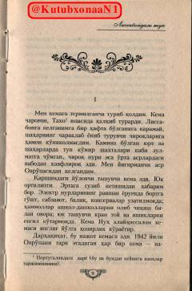

LTIkkinchi jahon urushi davridagi qochqinlar hayoti va taqdiri haqidagi ta'sirli roman.
Asar Ikkinchi jahon urushi yillarida Yevropani tark etishga majbur bo'lgan qochqinlar taqdiri haqida hikoya qiladi. Lissabon portida kechasi tasodifan uchrashib qolgan ikki kishining taqdiri va ularning og'ir kechinmalari markazga qo'yilgan.